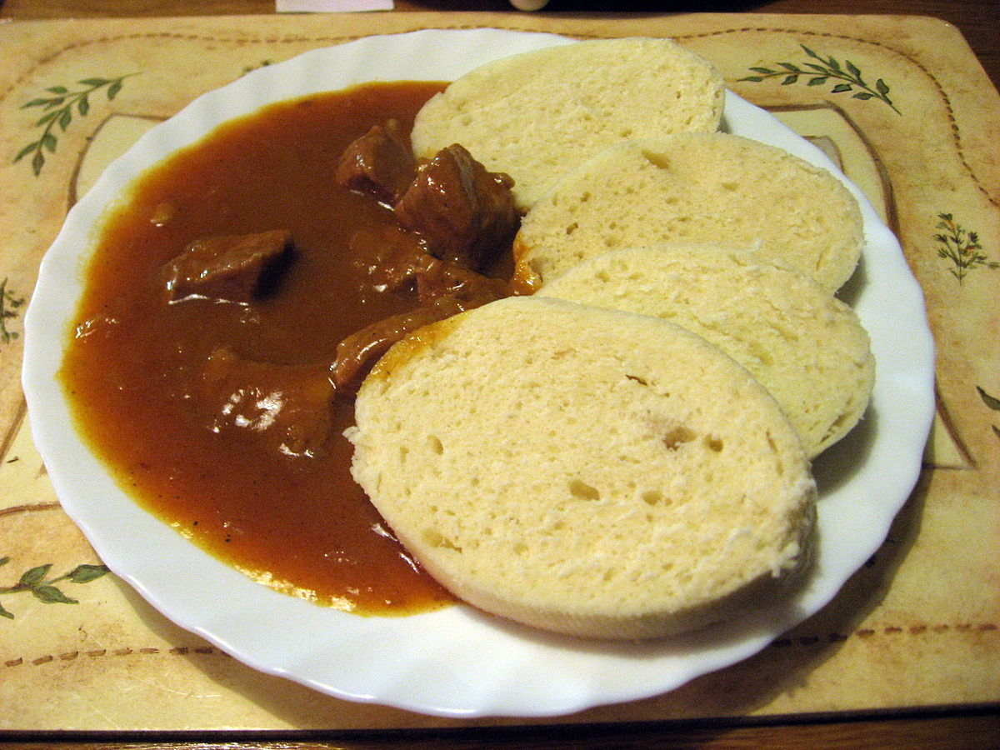

Guláš

Description: Guláš is like a top of mountain, little bit spicey sauce with
some beef and lots of onion!
Ingredients:
- 500g of beef meat of you'Re choice
- 500g of onion
- 3 spoons of lard
- 2 spoons of red pepper
- 4 pieces of garlic
- black pepper and salt
- tomatoe sauce
- water
Setup:
-
cut onion to little pieces and add it to pot and cook it on lard for 15
minutes
- add red pepper
- add tomato sauce and blend it all together
- add meat, salt and black pepper and again blend it
- mix it with little bit of warn water
- after one and half hour meal should be ready to eat
Go Back